🏆
HỆ THỐNG QUẢN LÝ HỘI NGHỊ THÔNG MINH
Giải pháp phần mềm ITKA — Tài liệu hướng dẫn sử dụng
Phiên bản 2.0 · 2026
Số hóa quy trình tổ chức · Tối ưu trải nghiệm khách mời · Nâng cao hiệu quả điều hành
Nền tảng: ASP.NET Core 8 · Giao diện responsive desktop & mobile
1. Giới thiệu & Đăng nhập hệ thống
Hệ thống số hóa toàn bộ quy trình tổ chức hội nghị: tạo phiên, sơ đồ chỗ ngồi, điểm danh QR, tin nhắn, tài liệu, khảo sát và báo cáo KPI — trên một nền tảng duy nhất.
Truy cập hệ thống qua trình duyệt tại địa chỉ máy chủ (ví dụ http://<IP>:5014). Đăng nhập bằng tài khoản được cấp:
| Tài khoản | Mật khẩu | Vai trò | Phạm vi |
|---|
| admin | admin@123 | Quản trị | Toàn quyền + Phân quyền |
| btc | btc@123 | Ban tổ chức | Toàn quyền nghiệp vụ |
| kythuat | kt@123 | Kỹ thuật viên | Sơ đồ, Điểm danh |
| letan | lt@123 | Lễ tân | Điểm danh, tra cứu |
Sau khi đăng nhập, hệ thống mở thẳng Danh sách hội nghị. Menu chức năng nằm ngang trên thanh tiêu đề; các nhóm có mũi tên ▾ sẽ xổ ra danh sách chức năng con.
2. Danh sách hội nghị
Điểm vào hệ thống — chọn một hội nghị để làm việc hoặc tạo mới.
- Lọc theo từ khóa (tên/mã/đơn vị), trạng thái (Nháp / Mở đăng ký / Đang diễn ra / Đã chốt), và khoảng ngày bắt đầu (Từ — Đến).
- Mỗi hội nghị hiển thị dạng thẻ: tên, mã, trạng thái, thời gian, địa điểm, đơn vị tổ chức, số phiên & số đại biểu.
- Bấm Mở để vào không gian làm việc của hội nghị đó; biểu tượng bút/thùng rác để Sửa/Xóa.
- Bấm Thêm hội nghị để tạo mới (tên, thời gian, địa điểm, mô tả...).
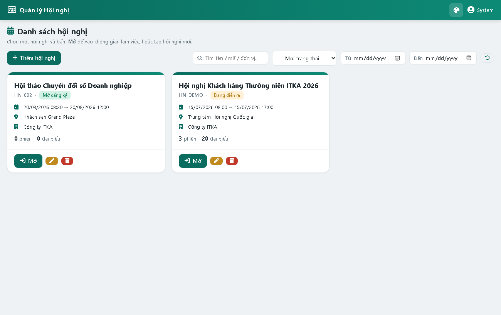
Hình 2 — Danh sách hội nghị với bộ lọc và nút Mở
3. Tổng quan hội nghị
Bức tranh nhanh về hội nghị đang chọn.
- Thẻ chỉ số: số phiên, số đại biểu, đã điểm danh (kèm tỉ lệ %), đại biểu VIP, tài liệu, khảo sát.
- Biểu đồ điểm danh theo từng phiên.
- Khu vực Lối tắt tới các chức năng thường dùng.
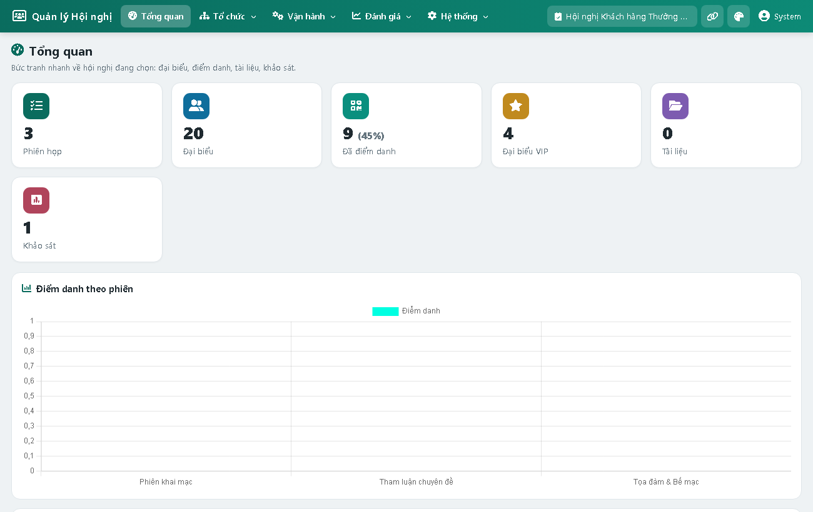
Hình 3 — Trang Tổng quan với thẻ KPI và biểu đồ
4. Quản lý Hội nghị, Phiên họp & Diễn giả
Khởi tạo, lên lịch trình và phân công diễn giả cho các phiên họp.
Thao tác: Menu Tổ chức → Hội nghị & Phiên. Chọn 1 hội nghị trong lưới → mở 2 thẻ Phiên họp và Diễn giả để thêm/sửa/xóa.
- Phiên họp: tên phiên, phòng họp, khung giờ bắt đầu/kết thúc, thứ tự, trạng thái, mô tả.
- Diễn giả: họ tên, chức danh, đơn vị, liên hệ, tiểu sử (soạn thảo định dạng).
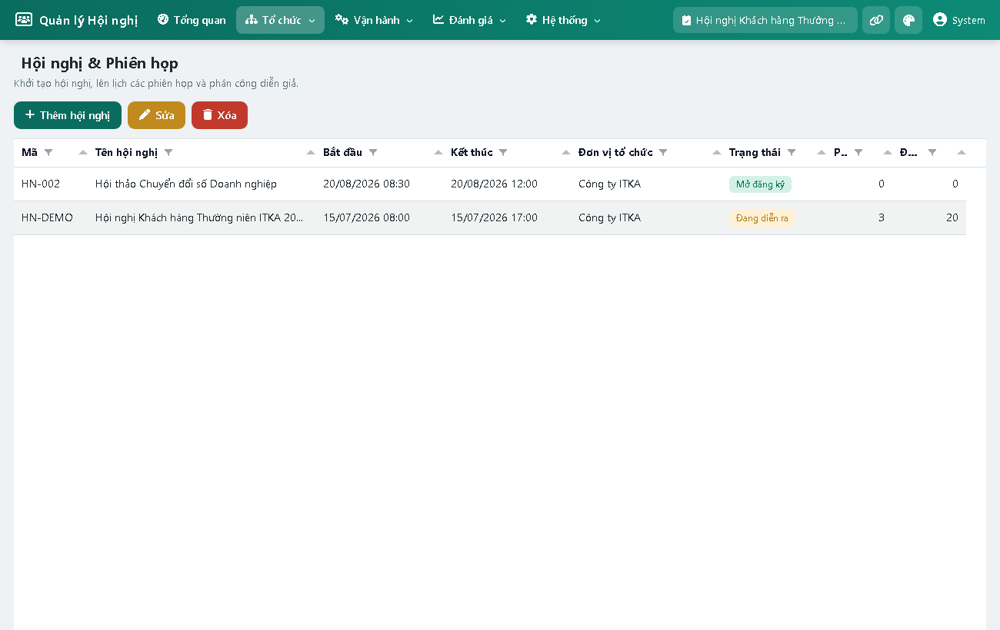
Hình 4 — Quản lý hội nghị, phiên họp và diễn giả
5. Quản lý Đại biểu & sinh mã QR
Danh sách đại biểu, phân nhóm, gắn nhãn VIP và sinh mã QR cá nhân.
Thao tác: Menu Tổ chức → Đại biểu.
- Thêm/Sửa/Xóa đại biểu; lọc theo nhóm; gắn nhãn VIP.
- Nhập nhanh: dán nhiều đại biểu (mỗi dòng: Họ tên | Chức danh | Đơn vị | Điện thoại | Email).
- Quản lý nhóm: tạo nhóm có màu sắc (VIP, Đối tác, Khách hàng, Báo chí...).
- Xem / In QR: mỗi đại biểu có mã QR cá nhân để check-in và mở cổng riêng; có thể in thẻ.
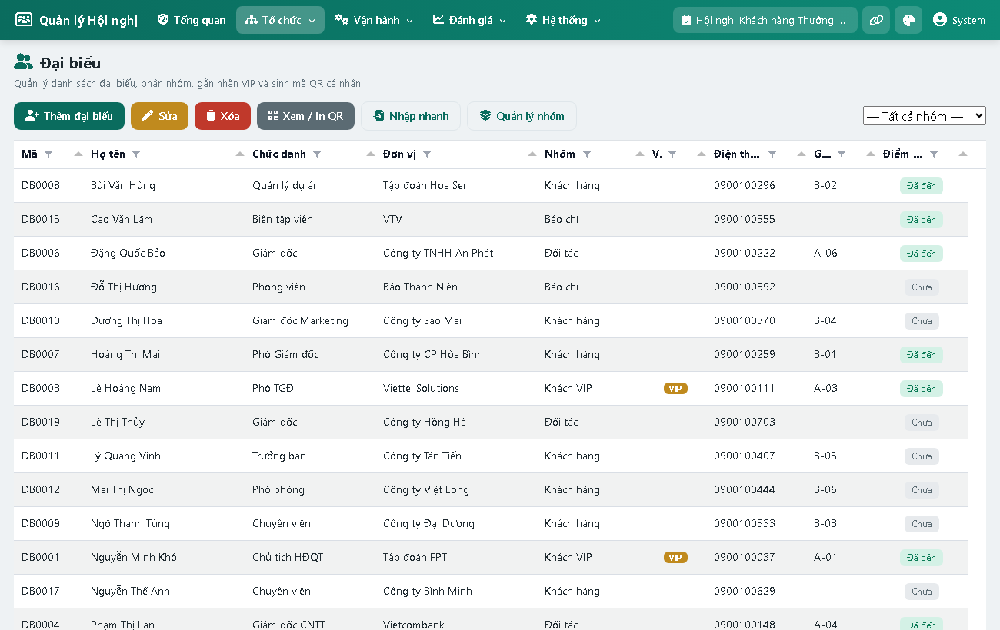
Hình 5 — Danh sách đại biểu (cột Ghế, Điểm danh, nhãn VIP)
6. Sơ đồ chỗ ngồi
Thiết kế sơ đồ hội trường trực quan và xếp chỗ cho đại biểu.
Thao tác: Menu Tổ chức → Sơ đồ chỗ ngồi.
- Sinh lưới ghế nhanh theo số hàng × số ghế.
- Chèn ghế tự do: double-click vào vùng trống để đặt một ghế tại vị trí bất kỳ (không theo lưới).
- Di chuyển ghế: nhấn giữ & kéo ghế tới vị trí mong muốn.
- Xếp đại biểu: kéo-thả đại biểu từ danh sách "Chưa xếp ghế" (bên phải) vào ghế. Ghế VIP có màu riêng.
- Click vào ghế để: đổi mã, đánh dấu VIP, bỏ đại biểu, xóa ghế.
- Chốt sơ đồ để khóa chỉnh sửa trước giờ khai mạc.
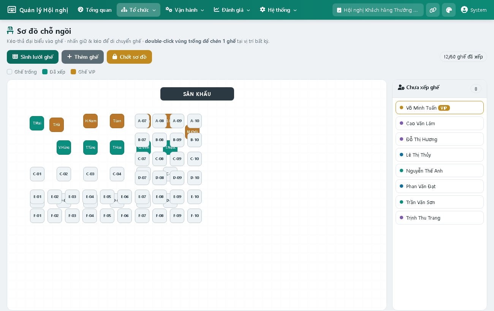
Hình 6 — Sơ đồ chỗ ngồi: ghế đã xếp (xanh), VIP (cam), panel chưa xếp
7. Điểm danh & điều hành thời gian thực
Theo dõi số đại biểu có mặt theo thời gian thực.
Thao tác: Menu Vận hành → Điểm danh.
- Thẻ chỉ số tự cập nhật: đã có mặt, tổng đăng ký, tỉ lệ tham dự, VIP có mặt.
- Nhật ký điểm danh cập nhật liên tục (phương thức QR / thủ công).
- Điểm danh thủ công cho đại biểu chưa quét; Hủy điểm danh khi cần.
- Mở màn hình Kiosk để dùng tại sảnh đón tiếp.
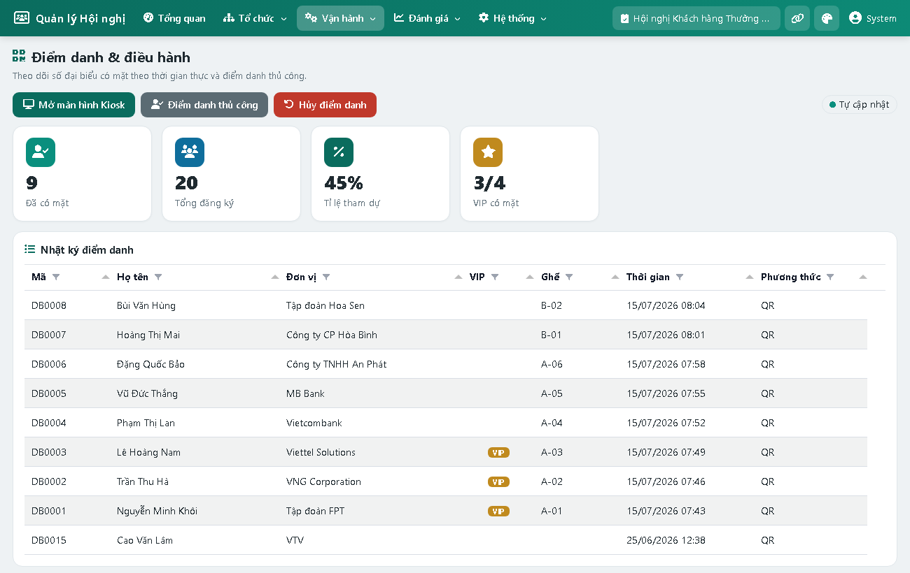
Hình 7 — Màn hình điều hành điểm danh (KPI realtime + nhật ký)
8. Kiosk Check-in (mobile)
Màn hình self-service đặt tại sảnh — đại biểu quét QR để điểm danh siêu tốc.
- Quét mã QR bằng camera (hoặc nhập tay mã đại biểu).
- Hiển thị tên, mã ghế ngay sau khi điểm danh; báo trùng nếu đã điểm danh.
- Bộ đếm có mặt / đăng ký / tỉ lệ cập nhật liên tục.
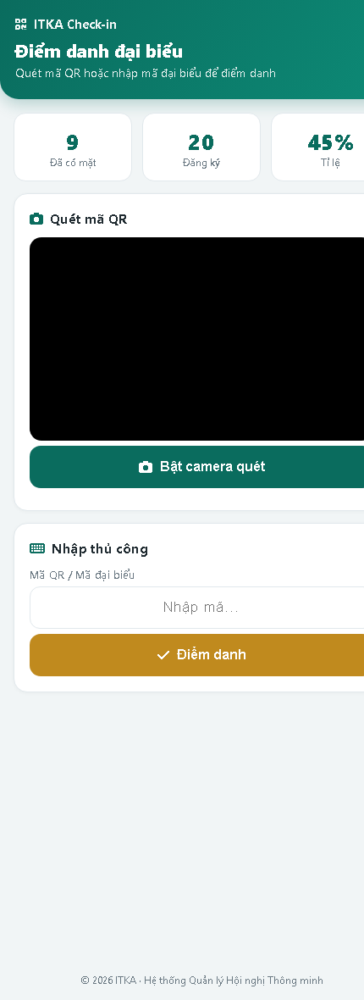
Hình 8 — Kiosk check-in trên thiết bị di động
9. Tin nhắn SMS & Zalo
Gửi thông báo tới đại biểu qua SMS / Zalo OA (chế độ mô phỏng — sẵn sàng cắm nhà cung cấp thật).
Thao tác: Menu Vận hành → Tin nhắn SMS/Zalo.
- Soạn chiến dịch: chọn kênh (SMS/Zalo), phạm vi (tất cả / theo nhóm / VIP), nội dung có biến cá nhân hóa {HoTen} {MaGhe} {TenHoiNghi}.
- Mẫu tin tái sử dụng nội dung.
- Gửi → hệ thống ghi log từng tin (thành công/thất bại, mã phản hồi) và cập nhật thống kê chiến dịch.
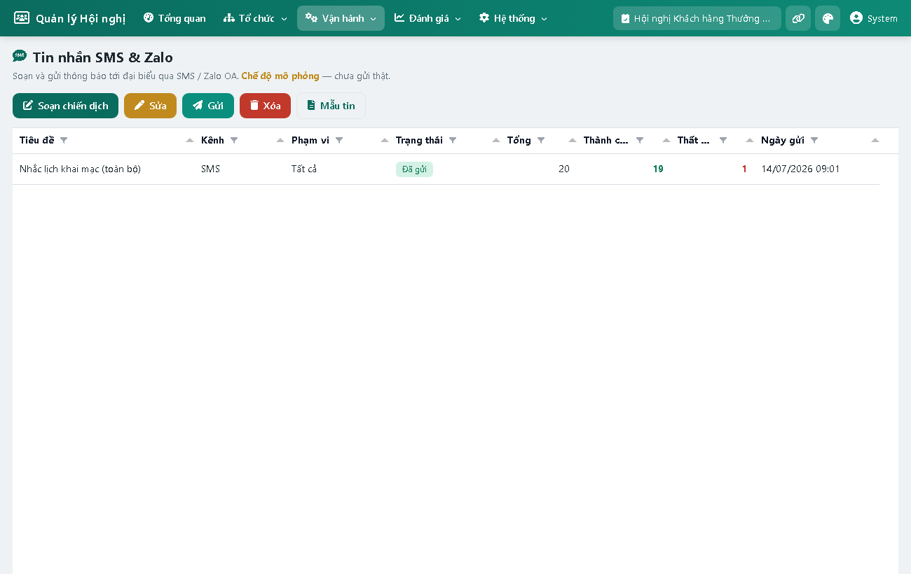
Hình 9 — Danh sách chiến dịch và nhật ký gửi
10. Chia sẻ Tài liệu
Phân phối tài liệu số tới đại biểu, không cần in ấn.
Thao tác: Menu Vận hành → Tài liệu.
- Tải tài liệu lên (PDF, Word, Excel, ảnh...), gắn vào phiên, đặt phạm vi công khai hoặc theo nhóm.
- Phân quyền chi tiết: chọn nhóm đại biểu được xem.
- QR chia sẻ: sinh mã QR để đại biểu quét tải tài liệu; hệ thống đếm lượt xem.
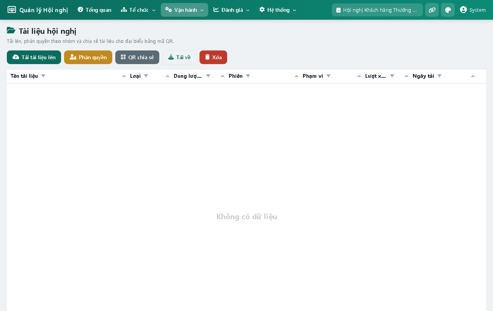
Hình 10 — Quản lý tài liệu (phạm vi, lượt xem, QR)
11. Khảo sát đánh giá (thiết kế)
Tạo phiếu khảo sát hài lòng cho đại biểu trả lời qua điện thoại/kiosk.
Thao tác: Menu Đánh giá → Khảo sát.
- Tạo khảo sát (tiêu đề, trạng thái Mở/Đóng).
- Thêm câu hỏi với 4 loại: thang điểm 1–5, một lựa chọn, nhiều lựa chọn, văn bản tự do; đặt bắt buộc/không.
- QR khảo sát để phát cho đại biểu.
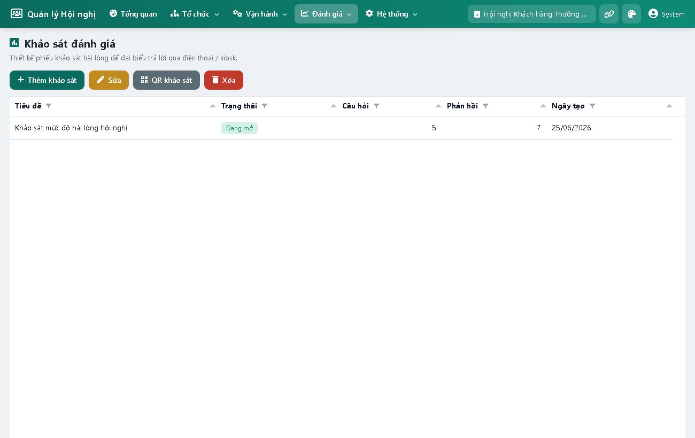
Hình 11 — Thiết kế khảo sát & câu hỏi
12. Khảo sát trên điện thoại
Đại biểu quét QR khảo sát và trả lời nhanh ngay trên điện thoại.
- Câu thang điểm hiển thị dạng sao; lựa chọn dạng nút bấm lớn; có ô văn bản.
- Kiểm tra câu bắt buộc trước khi gửi; chống trả lời trùng.
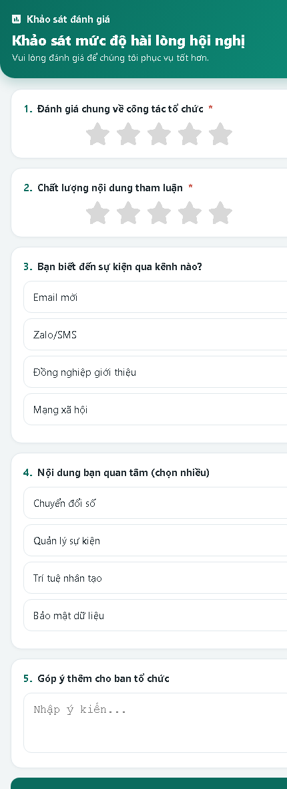
Hình 12 — Phiếu khảo sát trên di động
13. Cổng đại biểu (mobile)
Mỗi đại biểu có một cổng riêng (mở bằng QR cá nhân).
- Hiển thị thông tin, mã ghế, trạng thái điểm danh.
- Danh sách tài liệu được phép xem và khảo sát đang mở.
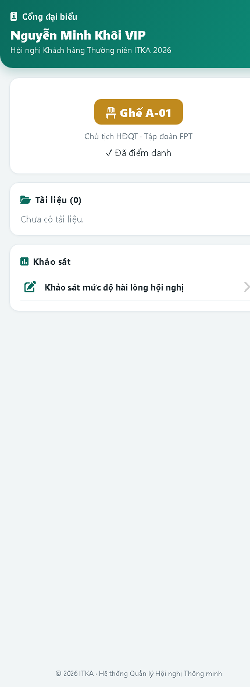
Hình 13 — Cổng thông tin đại biểu
14. Báo cáo & Chỉ số hiệu quả (KPI)
Tổng hợp tự động đo lường hiệu quả hội nghị.
Thao tác: Menu Đánh giá → Báo cáo & KPI.
- Chỉ số: tham dự thực tế/đăng ký & tỉ lệ, số phiên, lượt xem tài liệu, tin đã gửi, mức hài lòng trung bình.
- Biểu đồ: điểm danh theo phiên, cơ cấu đại biểu theo nhóm, lượt xem tài liệu, điểm hài lòng theo tiêu chí.
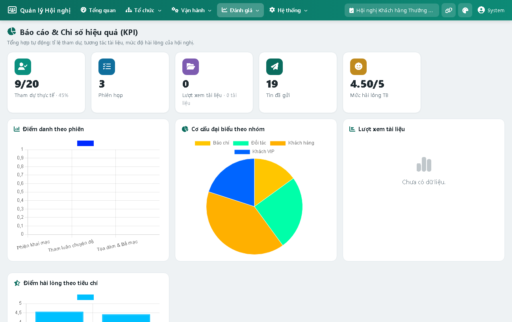
Hình 14 — Báo cáo KPI với thẻ chỉ số và biểu đồ
15. Phân quyền chi tiết
Quản trị vai trò và quyền theo từng chức năng (chỉ Quản trị viên).
Thao tác: Menu Hệ thống → Phân quyền.
- Vai trò & quyền: tạo vai trò; cấu hình ma trận quyền — mỗi chức năng × hành động (Xem / Thêm / Sửa / Xóa).
- Người dùng: tạo tài khoản, đặt quản trị/khóa, và gán vai trò cho người dùng.
- Hệ thống chặn truy cập ở cả giao diện lẫn máy chủ theo quyền đã cấp.
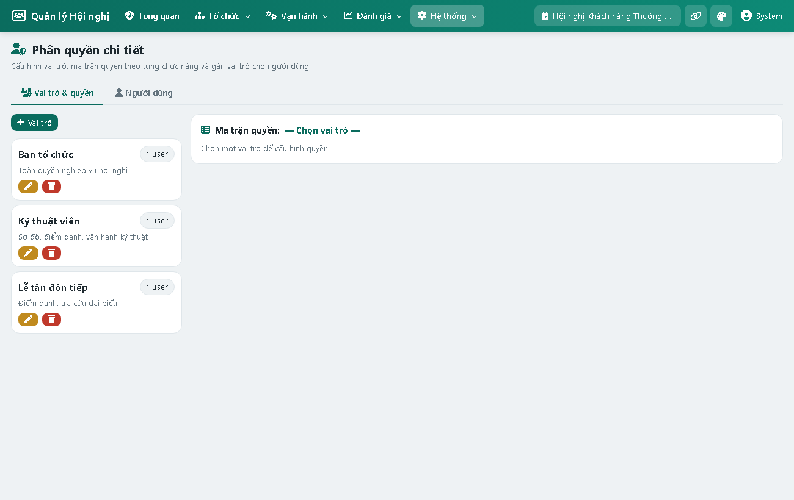
Hình 15 — Ma trận phân quyền theo vai trò
16. Cấu hình giao diện & liên kết Kiosk
- Giao diện (biểu tượng 🎨 trên thanh tiêu đề): chuyển chế độ Sáng / Tối và chọn màu chủ đạo (6 màu). Lựa chọn được ghi nhớ.
- Liên kết Kiosk (biểu tượng 🔗): hiển thị đường dẫn màn hình Kiosk của hội nghị, có nút Sao chép và Mở.
Giao diện đã được kiểm thử kỹ ở cả chế độ Sáng và Tối, tương thích màn hình desktop (ngang) và điện thoại (dọc/ngang).
17. Phụ lục — Kiến trúc & vận hành
- Nền tảng: ASP.NET Core 8, kiến trúc module nạp DLL động; cơ sở dữ liệu SQL Server (MeetDB tự khởi tạo).
- Bộ điều khiển giao diện (exControl): Tabulator (lưới), Tom-Select (chọn), Flatpickr (ngày), Jodit (soạn thảo), Chart.js (biểu đồ), qrcode (mã QR).
- Phân quyền (RBAC): Vai trò → quyền theo nhóm chức năng × hành động; gác fail-open an toàn.
- Mở cho mạng LAN: chạy máy chủ bind 0.0.0.0:5014, mở cổng 5014 trên tường lửa; máy khác truy cập http://<IP-máy-chủ>:5014.
- SMS/Zalo: hiện mô phỏng; cắm nhà cung cấp thật bằng cách hiện thực giao diện IMeetSender.
© 2026 ITKA — Hệ thống Quản lý Hội nghị Thông minh